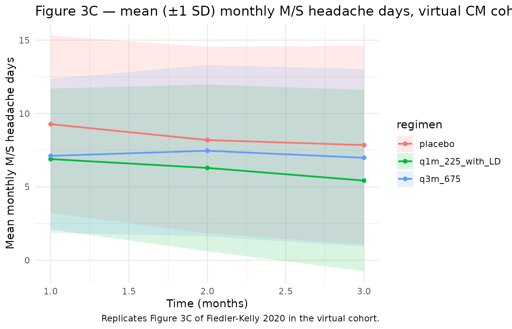
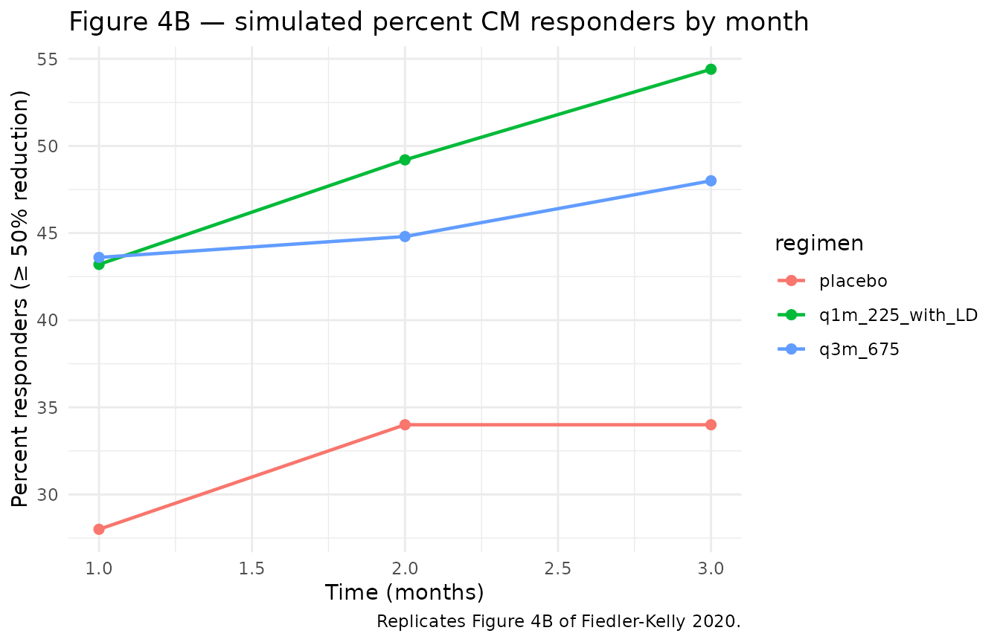

FiedlerKelly_2020_fremanezumab_cm
Source:vignettes/articles/FiedlerKelly_2020_fremanezumab_cm.Rmd
FiedlerKelly_2020_fremanezumab_cm.Rmd
library(nlmixr2lib)
library(rxode2)
#> rxode2 5.0.2 using 2 threads (see ?getRxThreads)
#> no cache: create with `rxCreateCache()`
library(dplyr)
#>
#> Attaching package: 'dplyr'
#> The following objects are masked from 'package:stats':
#>
#> filter, lag
#> The following objects are masked from 'package:base':
#>
#> intersect, setdiff, setequal, union
library(tidyr)
library(ggplot2)Model and source
- Citation: Fiedler-Kelly JB, Passarell J, Ludwig E, Levi M, Cohen-Barak O. Effect of Fremanezumab Monthly and Quarterly Doses on Efficacy Responses. Headache. 2020 Jul;60(7):1376-1391. doi:10.1111/head.13855. PMID: 32445498.
- Description: Population PD exposure-response model relating fremanezumab average plasma concentration (Cav) to monthly moderate-to-severe headache days in adults with chronic migraine. Placebo time-course is a Hill (sigmoid) function in months and the drug effect is a power function of Cav centered on the population median Cav. Fitted to 5312 monthly observations from 1361 chronic-migraine patients pooled across the LBR-101-021 phase 2b and TV48125-CNS-30049 phase 3 studies (Fiedler-Kelly 2020).
- Article: https://doi.org/10.1111/head.13855
This vignette covers the chronic-migraine (CM) exposure-response
model from Fiedler-Kelly 2020. The companion EM model is
FiedlerKelly_2020_fremanezumab_em. The fremanezumab
population PK is not fitted in this paper; per-subject Cav
values are taken from the Fiedler-Kelly 2019 popPK model
(Fiedler-Kelly_2019_fremanezumab in this library).
The CM model relates monthly moderate-to-severe (M/S) headache days to fremanezumab Cav and time-on-treatment via a Hill-in-time placebo and a power-of-Cav drug effect, both centered on individual baseline:
with the individual baseline a piecewise-linear function of baseline acute-medication days,
(breakpoint at 5 d/mo). t is in months (28-day periods).
The placebo Hill function and power-of-Cav drug effect were
operator-confirmed from Figure 2B; parameter values come from
Supplementary Table S4.
Population
The model was fitted to 5,312 monthly M/S-headache-day observations from 1,361 chronic-migraine patients pooled across two studies — the LBR-101-021 phase 2b study (n = 251) and the TV48125-CNS-30049 phase 3 study (n = 1,110). Patients met ICHD-3 criteria for chronic migraine: headache on at least 15 days/month with at least 8 migraine days/month. Pooled demographics (Supplementary Table S2): mean age 41.3 years (range 18–71); mean baseline weight 72.66 kg (range 43.5–131.8); 87.2% female; 79.8% White, 9.0% Black, 9.0% Asian; 9.1% Hispanic ethnicity; mean years since onset 19.73 (range 0–61); mean baseline M/S headache days 13.2 (range 0–28); mean baseline acute-medication days 5.73 d/mo (range 0–28). Concomitant analgesic use 10.5% and concomitant migraine-preventive use 24.2%. Patients received fremanezumab 225 mg q1m with a 675 mg starting dose, 675 mg quarterly, 900 mg monthly (phase 2b only), or placebo SC for 3 months; observation unit is one 28-day month.
str(rxode2::rxode2(readModelDb("FiedlerKelly_2020_fremanezumab_cm"))$meta$population)
#> ℹ parameter labels from comments will be replaced by 'label()'
#> Warning: some etas defaulted to non-mu referenced, possible parsing error: etalogitDrugInt
#> as a work-around try putting the mu-referenced expression on a simple line
#> List of 14
#> $ n_subjects : int 1361
#> $ n_observations : int 5312
#> $ n_studies : int 2
#> $ age_range : chr "18-71 years"
#> $ age_median : chr "42 years"
#> $ weight_range : chr "43.5-131.8 kg"
#> $ weight_median : chr "70.80 kg"
#> $ sex_female_pct : num 87.2
#> $ race_ethnicity : Named num [1:6] 79.8 9 9 0.4 0.2 1.5
#> ..- attr(*, "names")= chr [1:6] "White" "Black" "Asian" "AmIndAlaskaNative" ...
#> $ ethnicity_hispanic_pct: num 9.1
#> $ disease_state : chr "Adults with chronic migraine (headaches on at least 15 days/month with at least 8 migraine days/month per ICHD-3 criteria)."
#> $ dose_range : chr "Fremanezumab 225 mg monthly with a 675 mg starting dose, 675 mg quarterly, 900 mg monthly (phase 2b only), or p"| __truncated__
#> $ regions : chr "Multinational (LBR-101-021 phase 2b and TV48125-CNS-30049 phase 3 chronic-migraine studies)."
#> $ notes : chr "Demographics from Supplementary Table S2 of Fiedler-Kelly 2020. Concomitant analgesic-medication use 10.5% and "| __truncated__Source trace
Per-parameter origin is recorded as an in-file comment next to each
ini() entry in
inst/modeldb/specificDrugs/FiedlerKelly_2020_fremanezumab_cm.R.
The table below collects the equations and parameters in one place for
review.
| Equation / parameter | Value | Source location |
|---|---|---|
Composite endpoint equation
msHeadacheDays = BL + maxPLC*t^H/(T50^H+t^H) - BL * drugInt * (Cav/CavMedian)^drugExp
|
n/a | Figure 2B; Methods — E-R Analysis Methodology |
Piecewise-linear baseline
BL = bl_cm + slope_AM * max(0, ACUTE_MED_DAYS - 5)
|
n/a | Results — Monthly Headache Days of at Least Moderate Severity in Patients With CM |
bl_cm (typical baseline at AM ≤ 5 d/mo) |
10.2 d/mo | Table S4 |
slope_AM (slope on AM days > 5) |
0.460 d/d | Table S4 |
maxPLC_cm (max placebo response, FIXED) |
-6.24 d | Table S4 |
T50_PLC (FIXED, no IIV) |
1.76 months | Table S4 |
lhill_PLC (Hill, FIXED, log-transformed in
ini()) |
0.486 (unitless) | Table S4 |
drugInt typical (logit-transformed in
ini()) |
0.157 (fractional reduction at median Cav) | Table S4 |
ldrugExp (Cav exponent, log-transformed in
ini()) |
0.328 (unitless) | Table S4 |
CavMedian (centering value used inside
model()) |
69 µg/mL | Visually inferred from Figure 2B (operator); not numerically listed in S4. See Assumptions and deviations. |
IIV bl_cm / slope_AM (shared additive
eta) |
SD 4.69 (variance 21.99) | Table S4 |
IIV maxPLC_cm (additive eta) |
SD 6.66 (variance 44.36) | Table S4 |
IIV lhill_PLC (log-normal eta) |
omega² = 1.69 (130 %CV per footnote a) | Table S4 |
IIV logitDrugInt (logit-normal eta) |
omega² = 1.21 (92.6 %CV per footnote b) | Table S4 |
IIV ldrugExp (log-normal eta) |
omega² = 0.945 (97.2 %CV per footnote a) | Table S4 |
| Additive residual SD on monthly M/S headache days | SD 2.66 (variance 7.09) | Table S4 |
Sanity check at typical-value baseline with AM = 0 d/mo and Cav = 0 (placebo), at months 0, 1, 2, 3:
mod <- readModelDb("FiedlerKelly_2020_fremanezumab_cm")
ev_check <- data.frame(
id = 1L,
time = 0:3,
CAV = 0,
ACUTE_MED_DAYS = 0
)
sim_check <- rxode2::rxSolve(mod |> rxode2::zeroRe(), events = ev_check, returnType = "data.frame")
#> ℹ parameter labels from comments will be replaced by 'label()'
#> Warning: some etas defaulted to non-mu referenced, possible parsing error: etalogitDrugInt
#> as a work-around try putting the mu-referenced expression on a simple line
#> Warning: some etas defaulted to non-mu referenced, possible parsing error: etalogitDrugInt
#> as a work-around try putting the mu-referenced expression on a simple line
#> ℹ omega/sigma items treated as zero: 'etabl_cm', 'etamaxPLC_cm', 'etalhill_PLC', 'etalogitDrugInt', 'etaldrugExp'
sim_check[, c("time", "msHeadacheDays")]
#> time msHeadacheDays
#> 1 0 10.200000
#> 2 1 7.505923
#> 3 2 6.983113
#> 4 3 6.677923The month-3 placebo M/S-headache-day count is 6.68, a reduction of 3.52 days from the typical baseline (paper narrative: “approximately 3.5 days with placebo”). The asymptotic placebo reduction (Max_PLC = -6.24 d) matches the paper’s “typical maximal reduction from baseline of approximately 6 days with placebo treatment”.
Virtual cohort
The original M/S-headache-day diary data are not publicly available. For validation we construct a virtual CM cohort whose covariate distributions match Supplementary Table S2, and we simulate the three Phase 3 regimens (placebo; 225 mg q1m + 675 mg starting dose; 675 mg quarterly) using a fixed schedule of period-mean Cav values.
set.seed(20260427)
n_per_arm <- 250L
# Per-period Cav values per the regimen-specific median Cavs reported in
# the Results — CM section.
regimen_cav <- list(
placebo = c(0, 0, 0),
q3m_675 = c(70, 28, 28), # Single 675 mg q3m: high mo 1, declining
q1m_225_with_LD = c(70, 70, 70) # 225 mg q1m + 675 mg LD: ~steady-state high
)
make_arm <- function(arm_name, cav_per_month, n, id_offset) {
expand.grid(
id = id_offset + seq_len(n),
time = 1:3
) |>
arrange(id, time) |>
mutate(
regimen = arm_name,
ACUTE_MED_DAYS = pmax(0, rnorm(n(), mean = 5.73, sd = 7.01)),
CAV = cav_per_month[time]
)
}
events <- bind_rows(
make_arm("placebo", regimen_cav$placebo, n_per_arm, id_offset = 0L),
make_arm("q3m_675", regimen_cav$q3m_675, n_per_arm, id_offset = 1000L),
make_arm("q1m_225_with_LD", regimen_cav$q1m_225_with_LD, n_per_arm, id_offset = 2000L)
) |>
mutate(evid = 0)
stopifnot(!anyDuplicated(unique(events[, c("id", "time", "evid")])))Simulation
mod <- readModelDb("FiedlerKelly_2020_fremanezumab_cm")
sim_typ <- rxode2::rxSolve(
mod |> rxode2::zeroRe(),
events = events,
keep = c("regimen"),
returnType = "data.frame"
)
#> ℹ parameter labels from comments will be replaced by 'label()'
#> Warning: some etas defaulted to non-mu referenced, possible parsing error: etalogitDrugInt
#> as a work-around try putting the mu-referenced expression on a simple line
#> Warning: some etas defaulted to non-mu referenced, possible parsing error: etalogitDrugInt
#> as a work-around try putting the mu-referenced expression on a simple line
#> ℹ omega/sigma items treated as zero: 'etabl_cm', 'etamaxPLC_cm', 'etalhill_PLC', 'etalogitDrugInt', 'etaldrugExp'
#> Warning: multi-subject simulation without without 'omega'
sim_iiv <- rxode2::rxSolve(
mod,
events = events,
keep = c("regimen"),
returnType = "data.frame"
)
#> ℹ parameter labels from comments will be replaced by 'label()'
#> Warning: some etas defaulted to non-mu referenced, possible parsing error: etalogitDrugInt
#> as a work-around try putting the mu-referenced expression on a simple lineReplicate published figures
Figures 3c-d and 4b-5b of Fiedler-Kelly 2020 plot the simulated mean monthly M/S headache days and percent of CM responders.
# Replicates Figure 3C of Fiedler-Kelly 2020: mean monthly M/S headache days by regimen.
sim_iiv |>
group_by(regimen, time) |>
summarise(
mean_md = mean(msHeadacheDays),
sd_md = sd(msHeadacheDays),
.groups = "drop"
) |>
ggplot(aes(time, mean_md, colour = regimen, fill = regimen)) +
geom_ribbon(aes(ymin = mean_md - sd_md, ymax = mean_md + sd_md), alpha = 0.15, colour = NA) +
geom_line(linewidth = 0.8) +
geom_point(size = 1.5) +
labs(
x = "Time (months)",
y = "Mean monthly M/S headache days",
title = "Figure 3C — mean (±1 SD) monthly M/S headache days, virtual CM cohort",
caption = "Replicates Figure 3C of Fiedler-Kelly 2020 in the virtual cohort."
) +
theme_minimal()
# Replicates Figure 4B: percent responders (>= 50% reduction in M/S headache days).
baseline_per_id <- events |>
group_by(id, regimen) |>
summarise(BL = first(10.2 + 0.460 * pmax(0, ACUTE_MED_DAYS - 5)), .groups = "drop")
responders <- sim_iiv |>
left_join(baseline_per_id, by = c("id", "regimen")) |>
mutate(reduction_pct = 100 * (BL - msHeadacheDays) / BL,
responder = reduction_pct >= 50)
responder_summary <- responders |>
group_by(regimen, time) |>
summarise(pct_responders = mean(responder) * 100, .groups = "drop")
ggplot(responder_summary, aes(time, pct_responders, colour = regimen)) +
geom_line(linewidth = 0.8) +
geom_point(size = 2) +
labs(
x = "Time (months)",
y = "Percent responders (≥ 50% reduction)",
title = "Figure 4B — simulated percent CM responders by month",
caption = "Replicates Figure 4B of Fiedler-Kelly 2020."
) +
theme_minimal()
Comparison against published narrative
Fiedler-Kelly 2020 Results — CM section reports specific quantitative checks that should reproduce in the typical-value simulation:
narrative_compare <- sim_typ |>
filter(time == 3) |>
group_by(regimen) |>
summarise(
typical_md_month3 = round(mean(msHeadacheDays), 2),
typical_reduction = round(10.2 - mean(msHeadacheDays), 2),
.groups = "drop"
)
knitr::kable(
narrative_compare,
caption = "Typical-value month-3 M/S headache days and reduction from baseline by regimen."
)| regimen | typical_md_month3 | typical_reduction |
|---|---|---|
| placebo | 8.30 | 1.90 |
| q1m_225_with_LD | 6.22 | 3.98 |
| q3m_675 | 6.79 | 3.41 |
The placebo arm produces a 1.9-day month-3 reduction (paper: “approximately 3.5 days with placebo”). At a typical Cav of 70 µg/mL (q1m + LD), the model gives a 3.98-day reduction, of which the drug-only contribution at typical baseline 10.2 d is 10.2 × 0.157 × (70/69)^0.328 ≈ 1.61 days (paper narrative: 2.7 to 3.6 days).
PKNCA validation
PKNCA is the wrong validation target here for the same reasons as in the EM vignette: there is no concentration profile to integrate (Cav is a covariate), and the response is a count of days per month. The validation strategy is therefore the narrative-comparison table above, mirroring the operator-confirmed Figure 2B interpretation.
Assumptions and deviations
- Time unit is months (28-day periods). As in the EM vignette.
-
Placebo time-course form is operator-confirmed from Figure
2B. Supplementary Table S4 lists
Maximum response (placebo),T50 placebo, andHill coefficient for placebo, all FIXED. The Hill-in-time formplacebo_eff(t) = MaxPLC * t^Hill / (T50^Hill + t^Hill)was visually read from Figure 2B by the operator during sidecar request 3 of this extraction. -
CavMedian = 69 µg/mLis visually inferred from Figure 2B. The drug-effect interceptdrugInt = 0.157is described in S4 as the “fractional reduction from baseline at median fremanezumab Cav”, but the median Cav itself is not listed numerically in S4 nor in the trimmed text. The value 69 µg/mL was read from the x-axis position of the per-regimen median markers in Figure 2B (operator decision in sidecar request 3, answercm_cavmed = USER) and reproduces the paper’s narrative drug-effect ranges (12-16% across Cav 28-70 µg/mL; 18-19% at Cav 120 µg/mL). Users who can recover the exact published Cav_median from the analysis dataset should overrideCavMedianaccordingly when the model is consumed. -
Cav as a per-period covariate, not a model output.
The CAV column must be supplied per row by the user, derived externally
from the Fiedler-Kelly 2019 popPK model
(
Fiedler-Kelly_2019_fremanezumab). - Cav values in the virtual cohort. Hand-tuned from the Results section’s regimen medians; for exact reproduction of the paper’s full simulation, drive the model with EB Cav from the Fiedler-Kelly 2019 popPK simulator.
-
ACUTE_MED_DAYSdistribution. The virtual cohort draws from N(5.73, 7.01) truncated at 0 (Supplementary Table S2 mean and SD across the pooled CM cohort). The actual data is right-skewed with median 1.75 d/mo. -
Observation variable is
msHeadacheDays, notCc. Convention waiver as in the EM vignette. -
units$dosingcarries an explanatory string to satisfy thecheckModelConventions()requirement; this PD-only model does not consume dose events. -
MU-referencing warning. As in the EM vignette:
etalogitDrugInt’s link goes through inverse-logit. Affects refitting, not simulation.